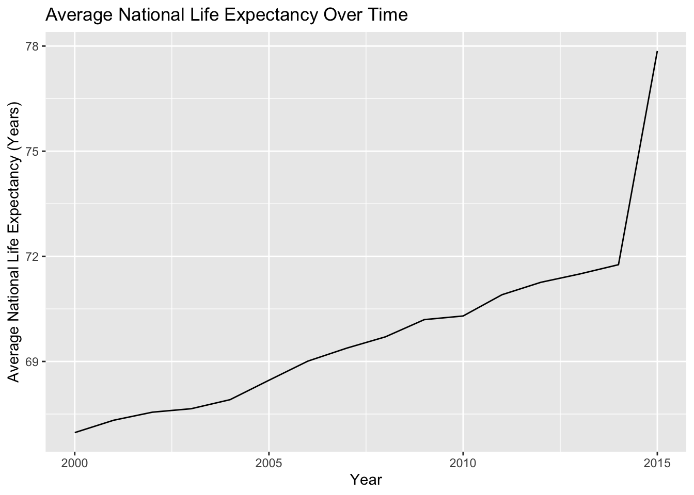
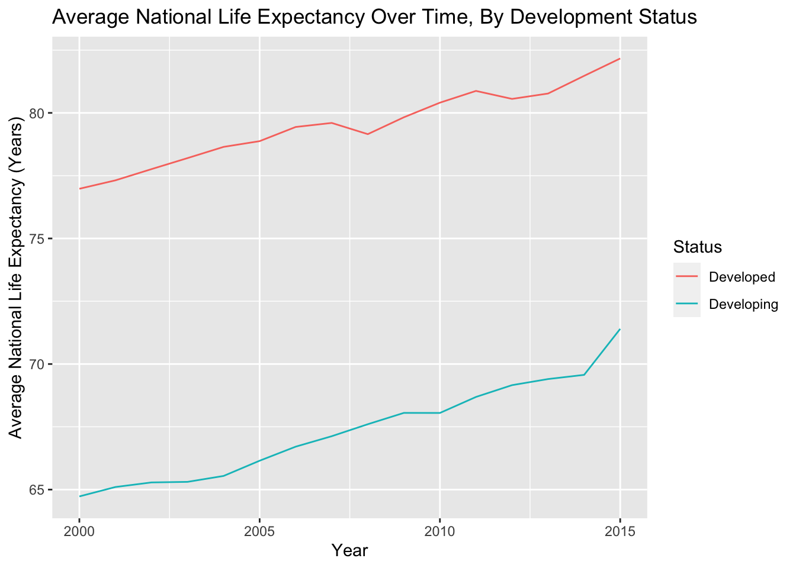
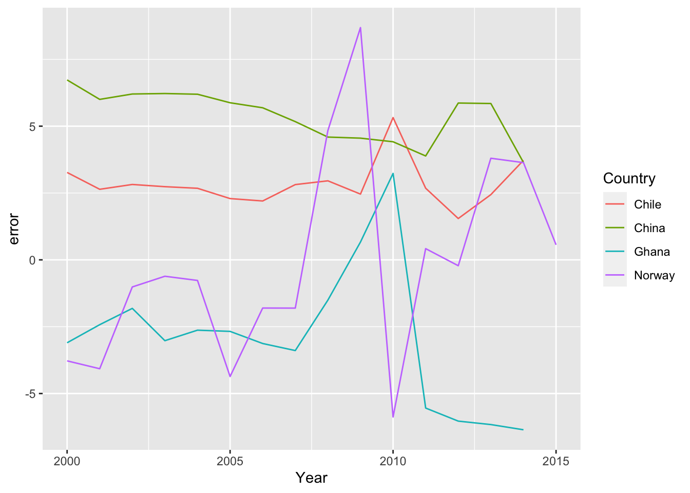
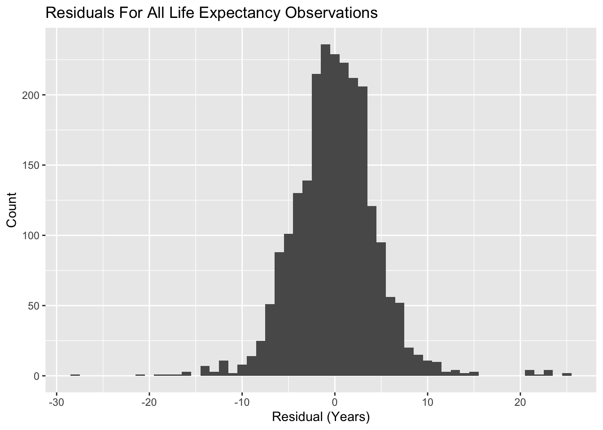
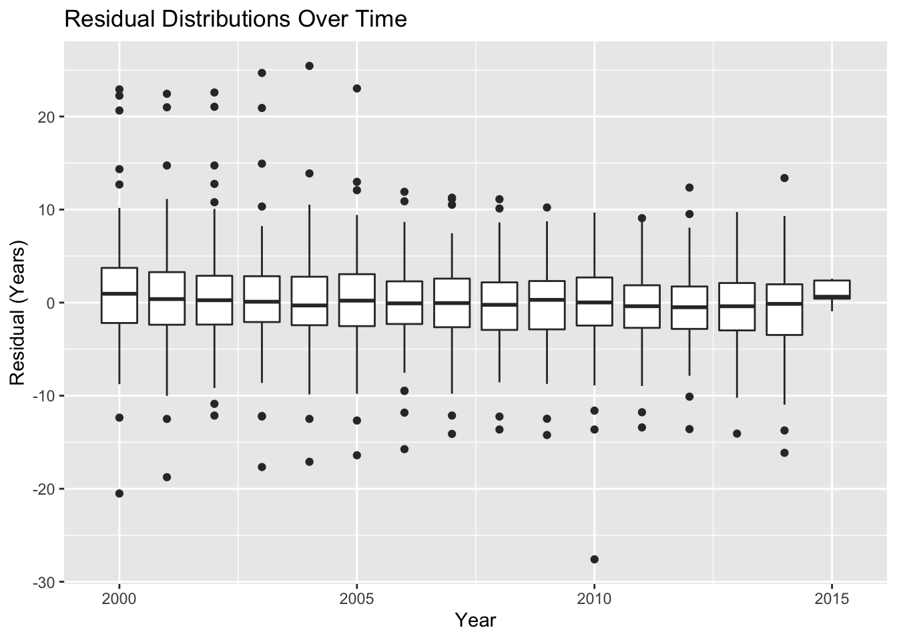
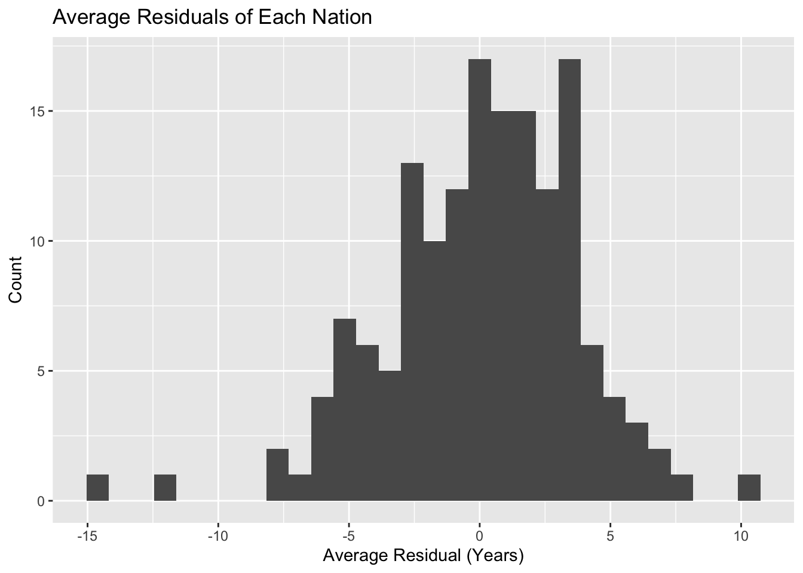
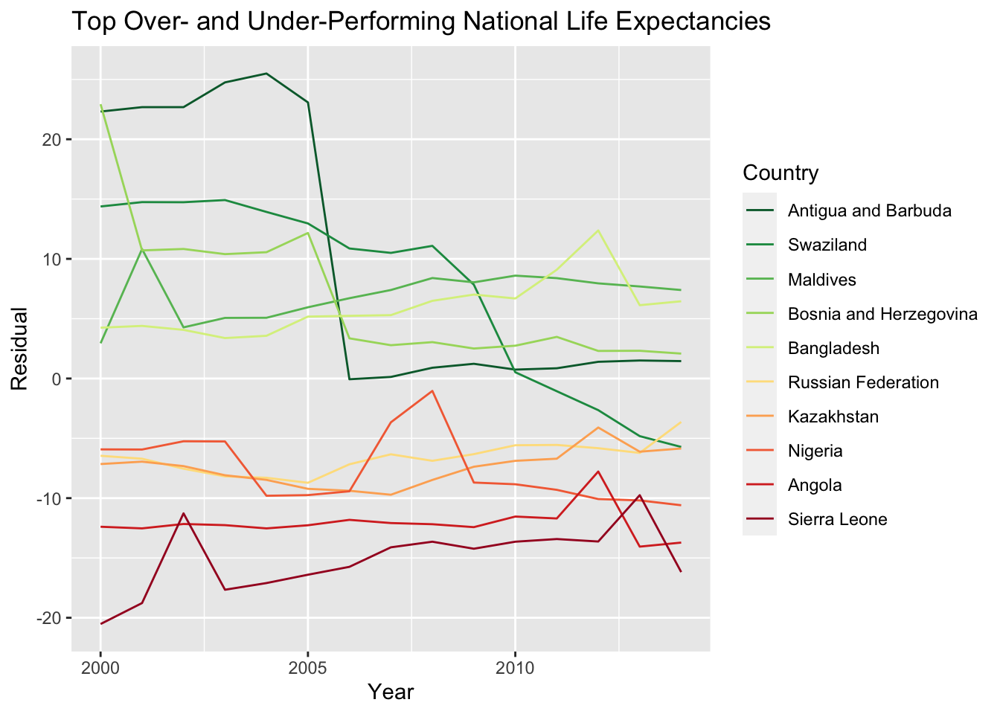

Next steps:
library(tidyverse)## ── Attaching packages ─────────────────────────────────────── tidyverse 1.3.1 ──## ✓ ggplot2 3.3.3 ✓ purrr 0.3.4
## ✓ tibble 3.1.0 ✓ dplyr 1.0.5
## ✓ tidyr 1.1.3 ✓ stringr 1.4.0
## ✓ readr 1.4.0 ✓ forcats 0.5.1## ── Conflicts ────────────────────────────────────────── tidyverse_conflicts() ──
## x dplyr::filter() masks stats::filter()
## x dplyr::lag() masks stats::lag()data <- read_csv("life_CLEAN.csv")##
## ── Column specification ────────────────────────────────────────────────────────
## cols(
## Country = col_character(),
## Year = col_double(),
## Status = col_character(),
## Life.expectancy = col_double(),
## Schooling = col_double(),
## GDP = col_double(),
## Alcohol = col_double(),
## BMI = col_double(),
## percentage.expenditure = col_double(),
## Income.composition.of.resources = col_double(),
## HIV.AIDS = col_double(),
## thinness.5.9.years = col_double(),
## thinness.10.19.years = col_double()
## )data## # A tibble: 2,311 x 13
## Country Year Status Life.expectancy Schooling GDP Alcohol BMI
## <chr> <dbl> <chr> <dbl> <dbl> <dbl> <dbl> <dbl>
## 1 Afghanistan 2015 Developing 65 10.1 584. 0.01 19.1
## 2 Afghanistan 2014 Developing 59.9 10 613. 0.01 18.6
## 3 Afghanistan 2013 Developing 59.9 9.9 632. 0.01 18.1
## 4 Afghanistan 2012 Developing 59.5 9.8 670. 0.01 17.6
## 5 Afghanistan 2011 Developing 59.2 9.5 63.5 0.01 17.2
## 6 Afghanistan 2010 Developing 58.8 9.2 553. 0.01 16.7
## 7 Afghanistan 2009 Developing 58.6 8.9 446. 0.01 16.2
## 8 Afghanistan 2008 Developing 58.1 8.7 373. 0.03 15.7
## 9 Afghanistan 2007 Developing 57.5 8.4 370. 0.02 15.2
## 10 Afghanistan 2006 Developing 57.3 8.1 273. 0.03 14.7
## # … with 2,301 more rows, and 5 more variables: percentage.expenditure <dbl>,
## # Income.composition.of.resources <dbl>, HIV.AIDS <dbl>,
## # thinness.5.9.years <dbl>, thinness.10.19.years <dbl>year_averages <- aggregate(Life.expectancy ~ Year, data = data, FUN = mean)
ggplot(data = year_averages, mapping = aes(x = Year, y = Life.expectancy)) +
geom_line() +
labs(title = "Average National Life Expectancy Over Time",
x = "Year",
y = "Average National Life Expectancy (Years)") +
stat_smooth(method = "lm", se = FALSE, linetype = "dashed")## `geom_smooth()` using formula 'y ~ x'
# savefig("life_expectancy__year.png")
summary(lm(Life.expectancy ~ Year, data = year_averages))##
## Call:
## lm(formula = Life.expectancy ~ Year, data = year_averages)
##
## Residuals:
## Min 1Q Median 3Q Max
## -1.2597 -0.6871 -0.2405 0.0802 4.3518
##
## Coefficients:
## Estimate Std. Error t value Pr(>|t|)
## (Intercept) -907.02839 145.05142 -6.253 2.12e-05 ***
## Year 0.48662 0.07225 6.735 9.55e-06 ***
## ---
## Signif. codes: 0 '***' 0.001 '**' 0.01 '*' 0.05 '.' 0.1 ' ' 1
##
## Residual standard error: 1.332 on 14 degrees of freedom
## Multiple R-squared: 0.7641, Adjusted R-squared: 0.7473
## F-statistic: 45.36 on 1 and 14 DF, p-value: 9.551e-06status_averages <- aggregate(Life.expectancy ~ Year + Status, data = data, FUN = mean)
ggplot(data = status_averages, mapping = aes(x = Year, y = Life.expectancy)) +
geom_line(mapping = aes(color = Status)) +
labs(title = "Average National Life Expectancy Over Time, By Development Status",
x = "Year",
y = "Average National Life Expectancy (Years)") +
stat_smooth(mapping = aes(group = Status), method = "lm", se = FALSE,
color = "black", size = 0.5, linetype = "dashed")## `geom_smooth()` using formula 'y ~ x'
data$Status.proxy <- as.integer(factor(data$Status, levels = c("Developing",
"Developed"),
labels = c(0, 1))) - 1
summary(lm(Life.expectancy ~ Status.proxy + Year, data = data))##
## Call:
## lm(formula = Life.expectancy ~ Status.proxy + Year, data = data)
##
## Residuals:
## Min 1Q Median 3Q Max
## -31.883 -5.658 1.239 6.384 21.901
##
## Coefficients:
## Estimate Std. Error t value Pr(>|t|)
## (Intercept) -657.67632 80.43631 -8.176 4.77e-16 ***
## Status.proxy 12.22552 0.44800 27.289 < 2e-16 ***
## Year 0.36112 0.04008 9.011 < 2e-16 ***
## ---
## Signif. codes: 0 '***' 0.001 '**' 0.01 '*' 0.05 '.' 0.1 ' ' 1
##
## Residual standard error: 8.328 on 2308 degrees of freedom
## Multiple R-squared: 0.2642, Adjusted R-squared: 0.2636
## F-statistic: 414.4 on 2 and 2308 DF, p-value: < 2.2e-16So clearly country status is a large factor in life expectancy over time. On average, developed countries have life expectancies over 12 years higher than developing countries. Additionally, every year raises the global life expectancy by about a third of a year. These coefficients are highly significant and graphically the trends look relatively constant. If we extrapolate this pattern forwards, that means each person can expect to life on average, 1.5 times as long as the life expectancy when they were born. For people born around 2000, that’s about 116 years old.
model <- lm(Life.expectancy ~ Schooling + GDP + Alcohol + BMI +
percentage.expenditure + Income.composition.of.resources +
HIV.AIDS + thinness.5.9.years + thinness.10.19.years, data = data)
summary(model)##
## Call:
## lm(formula = Life.expectancy ~ Schooling + GDP + Alcohol + BMI +
## percentage.expenditure + Income.composition.of.resources +
## HIV.AIDS + thinness.5.9.years + thinness.10.19.years, data = data)
##
## Residuals:
## Min 1Q Median 3Q Max
## -27.5813 -2.5470 -0.0207 2.6412 25.4956
##
## Coefficients:
## Estimate Std. Error t value Pr(>|t|)
## (Intercept) 4.980e+01 4.985e-01 99.895 < 2e-16 ***
## Schooling 1.078e+00 5.206e-02 20.702 < 2e-16 ***
## GDP 4.434e-05 1.709e-05 2.594 0.009537 **
## Alcohol -1.009e-01 2.961e-02 -3.407 0.000668 ***
## BMI 5.476e-02 6.336e-03 8.642 < 2e-16 ***
## percentage.expenditure 1.773e-04 1.111e-04 1.596 0.110670
## Income.composition.of.resources 9.957e+00 7.498e-01 13.279 < 2e-16 ***
## HIV.AIDS -6.609e-01 1.768e-02 -37.389 < 2e-16 ***
## thinness.5.9.years -4.548e-02 5.638e-02 -0.807 0.419871
## thinness.10.19.years -7.606e-02 5.757e-02 -1.321 0.186593
## ---
## Signif. codes: 0 '***' 0.001 '**' 0.01 '*' 0.05 '.' 0.1 ' ' 1
##
## Residual standard error: 4.522 on 2301 degrees of freedom
## Multiple R-squared: 0.7837, Adjusted R-squared: 0.7829
## F-statistic: 926.5 on 9 and 2301 DF, p-value: < 2.2e-16data$y.hat <- predict(model, data)
data$error <- data$Life.expectancy - data$y.hat
country_subset <- c("Norway", "China", "Ghana", "Chile", "Vietnam")
ggplot(data = data[which(data$Country %in% country_subset), ]) +
geom_line(mapping = aes(x = Year, y = error, color = Country))
ggplot(data = data) +
geom_histogram(mapping = aes(x = error), binwidth = 1) +
labs(title = "Residuals For All Life Expectancy Observations",
x = "Residual (Years)",
y = "Count")
ggplot(data = data) +
geom_boxplot(mapping = aes(x = Year, group = Year, y = error)) +
labs(title = "Residual Distributions Over Time",
x = "Year",
y = "Residual (Years)")
We can investigate the probability that a country would have error sample means of these magnitudes.
\[ H_0: \epsilon\sim N(0,\sigma^2)\text{ for all countries } \\ H_1: \epsilon\not\sim N(0,\sigma^2)\text{ for at least one country } \\ z_j = \sum_{i=1}^{n_j}\epsilon = \sum_{i=1}^{n_j}N(0,\sigma^2) \sim N(0,n_j\sigma^2) \text{ for each country }j \]
# av_error <- aggregate(error ~ Country, data = data, FUN = mean)
rse <- summary(model)$sigma
av_error <- data %>%
group_by(Country) %>%
summarize(count = n(), total_error = sum(error), mean_error = total_error / count) %>%
mutate(p_val = pnorm(abs(total_error), mean = 0, sd = sqrt(count) * rse, lower.tail = FALSE))
(signif_error <- av_error %>%
filter(p_val < 0.001) %>%
arrange(p_val))## # A tibble: 43 x 5
## Country count total_error mean_error p_val
## <chr> <int> <dbl> <dbl> <dbl>
## 1 Sierra Leone 15 -226. -15.1 2.02e-38
## 2 Angola 15 -181. -12.1 1.91e-25
## 3 Antigua and Barbuda 15 149. 9.94 8.16e-18
## 4 Nigeria 15 -114. -7.58 4.15e-11
## 5 Swaziland 15 112. 7.48 7.32e-11
## 6 Kazakhstan 15 -112. -7.45 8.60e-11
## 7 Maldives 15 105. 6.98 1.12e- 9
## 8 Bosnia and Herzegovina 15 102. 6.81 2.68e- 9
## 9 Russian Federation 15 -99.4 -6.63 6.87e- 9
## 10 Togo 15 -95.9 -6.39 2.18e- 8
## # … with 33 more rowsggplot(data = av_error) +
geom_histogram(mapping = aes(x = mean_error)) +
labs(title = "Average Residuals of Each Nation",
x = "Average Residual (Years)",
y = "Count")## `stat_bin()` using `bins = 30`. Pick better value with `binwidth`.
outlier_order <- c(head(order(av_error$mean_error, decreasing = TRUE), 5),
tail(order(av_error$mean_error, decreasing = TRUE), 5))
av_error$over.rank <- order(av_error$mean_error, decreasing = TRUE)
outliers <- av_error$Country[outlier_order]
print(paste0(c("Top Over-perfomers: ", outliers[1:5])))## [1] "Top Over-perfomers: " "Antigua and Barbuda" "Swaziland"
## [4] "Maldives" "Bosnia and Herzegovina" "Bangladesh"print(paste0(c("Top Under-perfomers: ", outliers[10:6])))## [1] "Top Under-perfomers: " "Sierra Leone" "Angola"
## [4] "Nigeria" "Kazakhstan" "Russian Federation"outlier_data <- data[which(data$Country %in% outliers), ]
outlier_data$Country <- factor(outlier_data$Country, levels = outliers)
ggplot(data = outlier_data) +
geom_line(mapping = aes(x = Year, y = error, color = Country)) +
scale_color_brewer(palette = "RdYlGn", direction = -1) +
labs(title = "Top Over- and Under-Performing National Life Expectancies",
x = "Year",
y = "Residual")